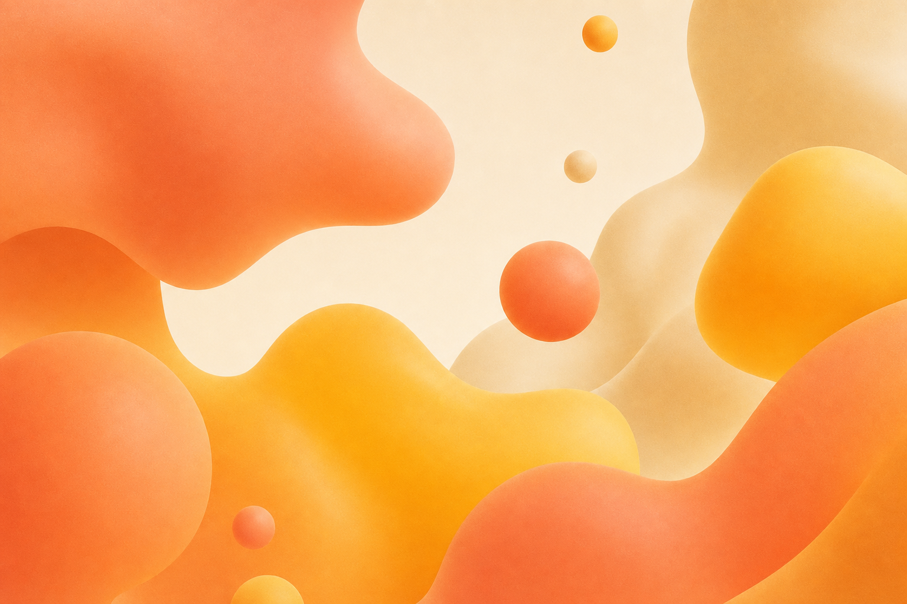
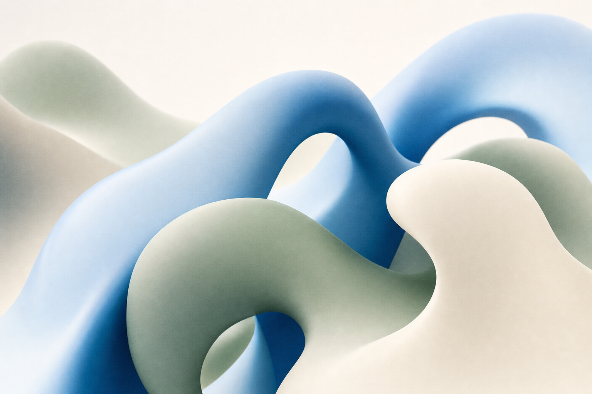
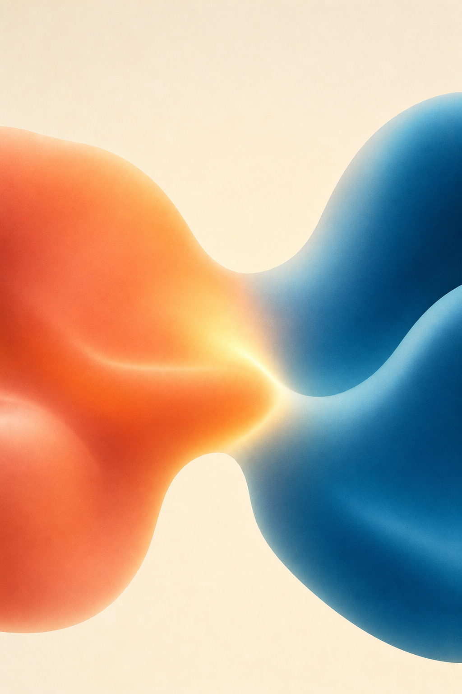

Een eerlijke blik op wat je energie geeft én waar je vandaag goed in bent — en welke paden de moeite zijn om te verkennen.
Hallo Lana. Je beantwoordde alle 25 vragen, dus dit beeld is mooi compleet. Lees rustig. Er zijn geen goede of foute antwoorden, en niets staat hier vast. Pak dit gerust later opnieuw vast, en deel het met iemand die je vertrouwt.
Dit is de rode draad door alles wat hierna komt. Niet wat je kan, maar wat je energie geeft.
Dit is je persoonlijke ijkpunt. Alles hieronder lees je ten opzichte van deze 6 — niet ten opzichte van iemand anders.

Dat tweede is subtiel. Daarover lees je zo meer bij jouw motor.
Deze twee zijn ongeveer even sterk — geen rangorde, ze horen bij elkaar.
Je krijgt vooral energie als je iets nieuws verzint én het aan iemand kan overbrengen. Wat je vandaag eerder leegtrekt, is werk dat veel herhaling vraagt zonder eigen inbreng. Dat hoeft niet zo te blijven — het is hoe het nu voelt.
Energie is maar de helft van het verhaal. Dit is de andere helft: dingen waarvan je zelf aangaf dat ze je vandaag goed afgaan. Niet voor altijd, niet beter of slechter dan een ander — gewoon waar jij je nu sterk in voelt.
Dit is het TA-PAS-idee: niet alleen wat je energie geeft (je passie), maar ook wat je al kan (je kunde). Pas als die twee samenkomen, voelt een keuze echt als de jouwe. Daar gaat de volgende pagina over.
Een motor is geen bewuste keuze. Het is een patroon dat zich vanzelf aanzet — vaak zonder dat je het doorhebt. Soms stuwt het je voort, zódat je je talenten volop kan inzetten. Soms zet het zich vast als een rem, waardoor net die talenten veel moeilijker bereikbaar worden.
geeft je richting · helpt je vooruit
Deze motor zet je in beweging: je hebt oog voor kwaliteit en wil dingen kloppend maken. Zolang die je vooruit duwt, is dat een kracht.
mooi — maar het kan je vandaag energie kosten
Je houdt rekening met anderen, en dat is waardevol. Vandaag merk je wel dat je jezelf daarbij soms wegcijfert — en dat trekt stilletjes aan je batterij.

Je sterkste motor — het goed willen maken voor anderen — staat vandaag een beetje op de rem. Dat betekent niet dat er iets mis is met jóu. Het is vaak een teken dat je omgeving je op dit moment net niet geeft wat deze motor nodig heeft. De volgende pagina laat zien wat dat precies is — en wat je eraan kan doen.
Dit is geen oordeel en geen test. Het zijn gewoon jouw eigen antwoorden, zodat je herkent waar je motor vandaan komt. Lees ze rustig — en pik eruit wat klopt.
Dit is misschien wel het belangrijkste van dit hele rapport. Een motor is een onbewust patroon: iets dat zich vanzelf aanzet, zonder dat je het kiest. En hij heeft één ding nodig om je vooruit te helpen — het gevoel dat je genoeg controle hebt in de situatie waarin je zit. Krijgt hij dat gevoel, dan stuwt hij je voort. Krijgt hij het niet, dan slaat dezelfde motor om in een rem.
Geeft je omgeving je het gevoel dat je grip hebt op wat je doet, dan stuwt je motor je voort — en kan je je talenten volop inzetten. Je voelt je sterk, kiezen gaat makkelijker, en dingen gaan vanzelf wat vlotter.
Mist dat gevoel van controle, dan zet diezelfde motor zich vast als een rem. Vaak zonder dat je het doorhebt, worden net je talenten dan veel moeilijker bereikbaar — en voelt bijna alles zwaarder dan het zou moeten.
Daarom remt niet iedereen in dezelfde situatie. Het hangt ervan af wat jóuw motor nodig heeft. Bij jou spelen er vandaag twee — en elk stelt onbewust een eigen vraag aan je omgeving:
“Voelt het hier veilig genoeg, en is er een beetje harmonie om me heen?”
Deze motor stuwt je voort in een sfeer waar je je veilig en gewaardeerd voelt. Voel je spanning of moet je het iedereen naar de zin maken, dan cijfer je jezelf weg — en gaat hij remmen.
“Is dit een plek waar ik de tijd en ruimte krijg om iets echt goed te doen?”
Deze motor stuwt je voort als je mag uitblinken in kwaliteit. Krijg je daar geen ruimte voor — alles snel-snel, geen tijd om het kloppend te maken — dan zou ook hij kunnen gaan remmen.
Jouw sterkste motor is vandaag het goed willen maken voor anderen — en die staat nu een beetje op de rem. Dat is geen fout en niets om je zorgen over te maken. Maar het is wel iets om te kennen.
Want als die motor remt, bestaat het risico dat je keuzes maakt om iemand anders niet teleur te stellen, eerder dan vanuit wat jij zelf wil of kan. Stel je voor dat iemand die je graag ziet hoopt dat je een bepaalde richting kiest. Dan kan je — zonder het echt te willen — ja zeggen, omdat nee zeggen moeilijk voelt. Dat is precies waar deze motor je vandaag kwetsbaar maakt.
“Is deze keuze echt van mij — of kies ik vooral om iemand anders niet teleur te stellen?”
Dit is een momentopname, geen diagnose — en zeker geen oordeel over wie dan ook. Een motor die vandaag remt, kan morgen weer voortstuwen zodra de omgeving meebeweegt. Wil je (of iemand die met je meekijkt) precies begrijpen hoe deze motoren werken en wat elke motor nodig heeft? Achteraan in dit rapport staat een pagina die dat helemaal uitlegt.
Wat er vandaag het meest uitspringt staat bovenaan. Daaronder twee dingen die ongeveer even sterk zijn.
Je twee sterkste sporen ontmoeten elkaar hier: omgevingen waar creatie en overdracht samenkomen. Denk aan (kunst)educatie, communicatie & media, of vormgeving met een didactische kant — iets bedenken en het aan anderen overbrengen. Dit is wellicht het meest motiverende spoor, want het toont hoe jouw twee kanten in elkaar passen.
We tonen bewust meerdere paden, geen ranglijst en geen “jouw richting”. De sterkste, breedst onderzochte basis voor welk studiedomein bij iemand past, zijn interesses (het RIASEC-model). Jouw manier van werken en je energie verfijnen daarbij hoe een omgeving zou aanvoelen — dat is een onderbouwde hypothese, geen voorspelling. Daarom verkennen we, in plaats van te voorspellen. Meer hierover lees je op de laatste pagina.
Twee dingen lopen als een rode draad door je antwoorden, en ze versterken elkaar:
Je verzint graag iets nieuws, én je wil het delen met anderen. Die twee komen op meerdere plekken in je antwoorden samen naar boven — dat maakt dit een stevig stuk van hoe je vandaag in elkaar zit. Andere kanten van jou zijn nog volop in beweging, en dat hoort er helemaal bij.

Hierboven las je wat jouw antwoorden betekenen. Hier zie je ze gewoon zoals jij ze koos — per thema gebundeld. Niet om te scoren, wel om iets concreets in handen te hebben als je hierover wil praten.
Welke stelling herken je het sterkst? En is er er één die je verbaast? Neem die mee in een gesprek met je ouders, een leerkracht of je CLB.
Je persoonlijke ijkpunt waartegen je de rest leest.
Wat je wil doen — en wat je vandaag eerder leegtrekt.
Wat het soms even van je overneemt — geen oordeel, gewoon hoe jij het aangaf.
Jouw manier om met minder gedoe te studeren.
Soorten dingen waar je vandaag warm voor loopt.
Waar je iets zou willen betekenen.
Onthoud: dit is een momentopname. Niets hiervan staat vast, en over een jaar kan je sommige antwoorden anders invullen. Dat is precies de bedoeling.
Je kan nieuwe dingen bedenken en ze aan anderen doorgeven. En je betekent iets, juist voor de mensen om je heen. Dat neem je mee, vandaag en verder.
Iedereen heeft van jongs af aan een paar ‘motoren’ geleerd: manieren om met de wereld om te gaan die ooit hielpen om erbij te horen en gewaardeerd te worden. Hieronder lees je rustig wat een motor precies is, waar hij vandaan komt, en — het belangrijkste — wanneer hij je vooruit duwt en wanneer hij juist op de rem gaat staan. Deze pagina is er net zo goed voor je ouders, leerkrachten en coaches, want net zij kunnen je hierin enorm helpen.
Een motor is een onbewust gedragspatroon — geen bewuste keuze en zeker geen karaktertrekje dat je voor altijd vastlegt. Het is een soort automatische reactie die in actie schiet zonder dat je het doorhebt. Daarom voelt het soms alsof iets je ‘overkomt’.
Een motor is meestal vroeg in je leven aangeleerd: je merkte dat je waardering, rust of erkenning kreeg als je je op een bepaalde manier gedroeg. Dat patroon ging je herhalen. Het is dus iets wat je hebt geléérd — en wat je dus ook anders kunt leren hanteren.
Een motor gaat pas remmen wanneer de omgeving je geen gevoel van controle geeft. Dan wordt het patroon overactief en kost het zoveel energie dat je talenten veel moeilijker aanspreekbaar worden. Krijg je dat gevoel van controle wél, dan duwt diezelfde motor je juist vooruit.
Als je je motor leert herkennen, hoef je er niet meer door ‘gestuurd’ te worden. Je kunt dan zelf merken: ‘ah, mijn motor wordt nu onrustig’ — en bewust kiezen wat je doet. Dat noemen we zelfregulatie, en het is iets wat je beetje bij beetje kunt opbouwen.
Iedereen draagt deze motoren in zich, de een sterker dan de ander. Voor elke motor geldt: dezelfde motor stuwt je voort én kan je afremmen — het verschil zit in of de omgeving je dat ene gevoel van controle geeft dat die motor nodig heeft.
er ruimte en tijd is om iets zorgvuldig te doen. Dan worden talenten als nauwkeurigheid en oog voor kwaliteit maximaal aanspreekbaar.
alles overhaast moet of slordigheid wordt verwacht. De motor blijft dan maar checken of het wel goed genoeg is, en dat put uit.
de sfeer veilig en warm is. Dan komen talenten als aanvoelen, verbinden en samenwerken helemaal tot leven.
er spanning of conflict hangt. De motor gaat dan zichzelf wegcijferen om de vrede te bewaren, waardoor eigen talenten op de achtergrond raken.
er iemand is die echt in je gelooft. Voor die persoon haal je het beste uit jezelf en groeien je talenten zichtbaar.
dat vertrouwen er niet is of wegvalt. Dan zoekt de motor naar bevestiging in plaats van naar wat je eigenlijk wil doen, en dat kost energie.
er tempo en variatie is. Dan komen talenten als snel schakelen, energie brengen en knopen doorhakken helemaal tot hun recht.
iets traag of eentonig wordt. De motor wordt ongeduldig en jaagt door, waardoor dingen half afgemaakt blijven.
je zelf mag bepalen hoe je iets aanpakt. Dan komen talenten als doorzetten, zelfstandig werken en betrouwbaar zijn naar voren.
alles wordt voorgeschreven of je wordt te veel gecontroleerd. De motor sluit zich af en je laat minder van jezelf zien.
Het is verleidelijk om te denken dat een motor ‘weg’ moet. Maar een motor verdwijnt niet — en dat hoeft ook niet. Wat helpt, is niet de motor weghalen, maar de nood erachter invullen. Geef je de motor het gevoel van controle dat hij zoekt, dan ontspant hij en komt de jongere weer bij zijn talenten.
Daarin spelen ouders, leerkrachten en coaches een sleutelrol. Door eerst van buitenaf wat structuur en veiligheid te bieden, leert een jongere stap voor stap om dat zelf te gaan doen. Zo bouwt die de eigen zelfregulatie op — en kan die op den duur zijn motor zelf in energie houden.
Deze beschrijving van ‘motoren’ bouwt voort op het werk rond gedragspatronen binnen de transactionele analyse (Kahler, 1975) en op inzichten over zelfregulatie en het belang van een ondersteunende, autonomie-gevende omgeving. Het blijft een momentopname ter bespreking — nooit een diagnose of een vaststaand oordeel over wie iemand is. De wetenschappelijke bronnen vind je op de volgende pagina.
Deze pagina is bedoeld voor wie meekijkt over Lana’s schouder: ouders, leerkrachten, directies, CLB en pedagogen. Elke keuze in dit rapport — de toon, de kleuren, de grafiekvorm, en vooral wat we wel en niet beweren — rust op peer-reviewed onderzoek. Kort uitgelegd, met de bron erbij.
Beroepsinteresses bij 13–17-jarigen zijn slechts matig stabiel (r ≈ .51) en stabiliseren pas rond 18–22 jaar. Identiteit is in deze fase volop in vorming. Daarom spreekt het rapport consequent over “vandaag” en adviseert het een herafname.
RIASEC-congruentie voorspelt studiekeuze en -succes wél, maar met matige effectgroottes (r ≈ .20–.32). Eerlijk zijn over die grens is de kern van verantwoord testgebruik — daarom “paden om te verkennen”, niet “jouw richting”.
Eén richting voorschrijven riskeert foreclosure: een te vroege keuze zonder exploratie, ongunstig voor jongeren. De best gevalideerde instrumenten (O*NET, Self-Directed Search) tonen daarom bewust meerdere “careers to explore”. Dit rapport toont nooit minder dan drie sporen en sluit niets uit.
Of een omgeving energie geeft of leegtrekt, raakt de echte vraag van jongeren. Dit verankeren we in person-environment fit: mensen floreren in omgevingen die bij hen passen (ASA-theorie, fit-onderzoek).
Stellige labels (“jij bent…”) kunnen een jongere vastzetten en versterken een vaste mindset. Groeitaal en autonomie-taal (“je mag”, “je kan”) versterken motivatie en veerkracht. Daarom vermijdt dit rapport vaste-eigenschap-taal en spreekt het de jongere recht aan.
Het adolescente brein is hypergevoelig voor sociale vergelijking, dus tonen we geen normscores of ranglijsten t.o.v. anderen — enkel het eigen beeld. Staafvormen lezen nauwkeuriger dan radar/spinnenweb. Warme esthetiek vergroot de ervaren geloofwaardigheid, en rood vermijden we omdat het als “fout/gevaar” leest (oranje voor “kost energie”).
Of een keuze van binnenuit komt (autonome motivatie) of vooral van buitenaf wordt opgelegd — ouderdruk, “moeten”, niemand willen teleurstellen (gecontroleerde motivatie) — maakt een groot verschil. Autonome keuzes hangen samen met meer exploratie, zelfvertrouwen en welbevinden; gecontroleerde keuzes met twijfel, uitstel en spanning. Daarom signaleert dit rapport het wanneer een sterke innerlijke motor juist energie kost: niet als oordeel, maar als uitnodiging om samen te kijken of de context past bij wie de jongere is.
De vijf gedragspatronen die we ‘motoren’ noemen, gaan terug op werk binnen de transactionele analyse (Kahler, 1975), waar ze worden beschreven als grotendeels onbewuste patronen die in ons actief worden onder druk. Datzelfde werk beschrijft per patroon ook een ‘toestemming’ die het kalmeert — bijvoorbeeld ‘het is oké om jezelf te zijn’ of ‘het is oké om je tijd te nemen’. Wij vertalen die toestemmingen naar wat een jongere nodig heeft om controle te ervaren. Dat sluit aan bij onderzoek naar zelfregulatie en autonomie-ondersteuning: door eerst van buitenaf veiligheid en structuur te bieden (ouders, leerkrachten, coaches) leert een jongere die regulatie geleidelijk te internaliseren. Daarom beschrijven we een motor nooit als “wie je bent”, maar als een patroon dat ruimte vraagt — en dat de omgeving mee in energie kan houden.
1. De koppeling tussen onze eigen assen (manier van werken & energie) en studierichtingen is een onderbouwde hypothese, geen gevalideerd verband — er bestaat nog geen literatuur die ze specifiek aan studierichtingen koppelt. We presenteren ze daarom expliciet als “manier van werken die hierbij zou kunnen passen”, en bouwen aan eigen validatieonderzoek.
2. De RIASEC-ruggengraat is sterk onderbouwd, maar met matige effectgroottes. Precies daarom verkent dit instrument in plaats van te voorspellen. Transparantie hierover is geen zwakte, maar de kern van verantwoord instrumentontwerp.
Positionering: T4Teens-studieverkenning is een oriëntatie- en gesprekstrigger, complementair aan Onderwijskiezer en Columbus — geen vervanging en geen selectie-instrument (conform ITC Guidelines 2013 en de AERA/APA/NCME Standards 2014).
Low, K.S.D., Yoon, M., Roberts, B.W. & Rounds, J. (2005). The stability of vocational interests from early adolescence to middle adulthood. Psychological Bulletin 131(5). pubmed.ncbi.nlm.nih.gov/16187855
Gfrörer, T. et al. (2022). The development of vocational interests in early adolescence. European Journal of Personality 36(3). sagepub
Nye, C.D., Su, R., Rounds, J. & Drasgow, F. (2012). Vocational interests and performance. Persp. on Psych. Science 7(4). doi.org/10.1177/1745691612449021
Tracey, T.J.G. & Robbins, S.B. (2006). Interest–major congruence and college success. JVB 69(1). doi.org/10.1016/j.jvb.2005.11.003
Rounds, J. & Su, R. (2014). The nature and power of interests. Current Directions in Psych. Science 23(2). PDF
Lent, R.W., Brown, S.D. & Hackett, G. (1994). Social Cognitive Career Theory. JVB 45. ScienceDirect
Schneider, B. (1987). The people make the place (ASA). Personnel Psychology 40(3). PDF
Kristof-Brown, A.L., Zimmerman, R.D. & Johnson, E.C. (2005). Consequences of individuals’ fit at work. Personnel Psychology 58(2). doi
Nauta, M.M. (2010). Holland’s theory of vocational personalities. JCP 57(1). PDF
Batool, S.S. & Ghayas, S. (2020). Career identity formation among adolescents. Heliyon 6(9). PMC7498750
Gottfredson, L.S. (2002). Circumscription, compromise, and self-creation. samenvatting
Su, R., Rounds, J. & Armstrong, P.I. (2009). Men and things, women and people. Psych. Bulletin 135(6). pubmed 19883140
Mueller, C.M. & Dweck, C.S. (1998). Praise for intelligence can undermine motivation. JPSP 75(1). pubmed 9686450
Yeager, D.S., Dahl, R.E. & Dweck, C.S. (2018). Why interventions to influence adolescent behavior often fail but could succeed. Persp. on Psych. Science 13(1). pubmed 29232535
Ryan, R.M. & Deci, E.L. (2000). Self-Determination Theory. American Psychologist 55(1). PDF
Ratelle, C.F., Guay, F., Vallerand, R.J., Larose, S. & Senécal, C. (2007). Autonomous, controlled, and amotivated types of academic motivation. Journal of Educational Psychology 99(4). PDF
Gué, V. et al. Parental need-support, cognition and motivation in adolescents’ career decision-making. Univ. de Coimbra. estudogeral.sib.uc.pt
Kahler, T. & Capers, H. (1974). The miniscript. Transactional Analysis Journal 4(1); Kahler, T. (1975). Drivers: the key to the process of scripts. TAJ 5(3). Overzicht via Hay, J. (2009), Drivers & Working Styles (essay, PDF)
Soenens, B. & Vansteenkiste, M. (2005). Antecedents and outcomes of self-determination in 3 life domains: the role of parents’ and teachers’ autonomy support. Journal of Youth and Adolescence 34(6). PDF
Blakemore, S.-J. & Robbins, T.W. (2012). Decision-making in the adolescent brain. Nature Neuroscience 15. nature.com
Frontiers in Psychology (2025). State self-esteem and social feedback in adolescents. doi:10.3389/fpsyg.2025.1625771
International Test Commission (2013). ITC Guidelines on Test Use. PDF
AERA, APA & NCME (2014). Standards for Educational and Psychological Testing. AERA
O*NET Resource Center. Interest Profiler. onetcenter.org
Onderwijskiezer (CLB Vlaanderen). onderwijskiezer.be · RIASOC-vragenlijst KU Leuven, Lirias · SIMON-jr UGent, preprint